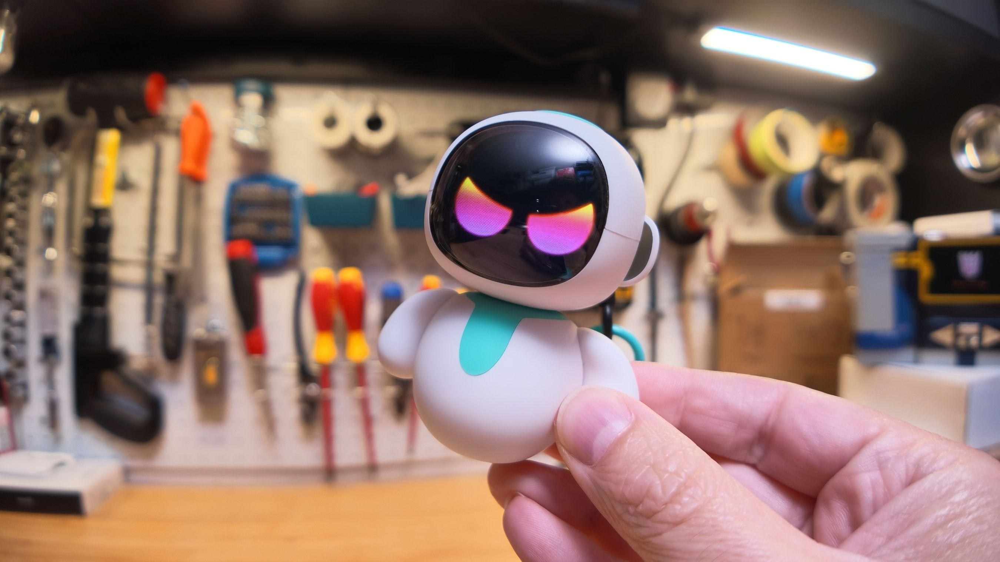

Eiliko — крошечный робот-брелок на сумку с ИИ-собеседником: он обещал владельцам, что «твои секреты со мной в безопасности». Исследователь безопасности Сэмми Аздзуфал и The Verge выяснили, что дела обстоят ровно наоборот: полные расшифровки всех разговоров можно было читать без труда, а поведение игрушки — менять удалённо. Данные при этом уходили на незащищённые серверы в Китае; по подсчётам The Verge, наружу торчали порядка 13 миллионов диалогов и свыше 31 тысячи профилей владельцев, включая американских детей.
Месяц Energize Lab молчала на письма журналистов, а 22 октября наконец выпустила заявление за подписью технического директора Ду Сяоюя. Компания признала «основные проблемы» из расследования, заявила о закрытии внешнего доступа к бэкендам, ротации всех ключей и отключении интерфейса удалённой подмены ответов робота. Функции долгой памяти и кастомных аватаров сняты, обещано удаление сохранённых переписок, профилей и изображений, а для полного аудита всех систем наймёт «независимую компанию по кибербезопасности». Отдельного официального анонса у Energize Lab нет: заявление прозвучало только через The Verge.
The Verge не поверила на слово — и правильно. На момент отправки заявления аудиозаписи клиентов и их фотографии по-прежнему хранились на публичных веб-адресах без какой-либо защиты: достаточно ссылки, чтобы увидеть лицо владельца. А Аздзуфал сохранил полный SSH-доступ к роботам и теоретически по-прежнему может читать транскрипты и подменять поведение игрушки. Так что фраза «мы закрыли весь внешний доступ» пока не соответствует действительности.
Классический сценарий на стыке ИИ и «железа»: устройство с микрофоном и камерой собирает всё подряд, а за облачную инфраструктуру стартапа никто не отвечал. Владелец здесь ничего не настроит — защита целиком на стороне производителя. Практический вывод простой: прежде чем дарить ребёнку «умную» игрушку с ИИ, стоит проверить, где хранятся записи разговоров, есть ли у компании публичная политика безопасности и контакт вроде security@ — у Energize Lab он появился только после скандала. Сама компания признаёт: «словами доверие не вернёшь» — и обещает отчитаться, когда аудит будет завершён.